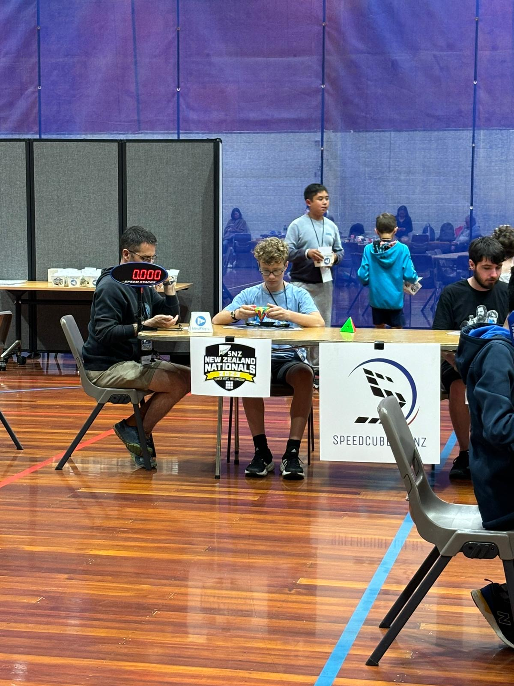
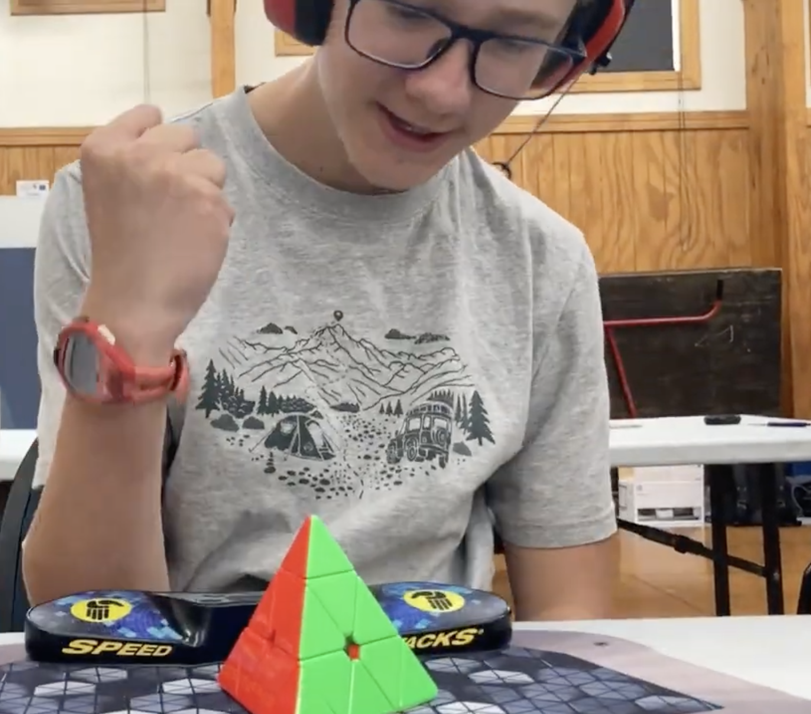

Speedcubing (also known as speedsolving or cubing), is the competitive solving of Rubik's Cube-like puzzles. Global speedcubing is sanctioned by the World Cube Association (WCA).
The current world record for a single solve of a 3x3x3 Rubik's Cube is 3.05 seconds and is held by China's Xuanyi Geng.
I have been speedcubing since December 2023, have competed in over 10 competitions and completed over 300 solves in WCA-recognised competitions.

Solving a Pyraminx at the 2023 New Zealand National Championships
I use the 4 Look Last Layer method to solve the 3x3x3 Rubik's Cube in under 20 seconds on average. I am currently ranked 72nd in New Zealand for Pyraminx (a 4-sided, pyramind-shaped puzzle) average, with a result of 5.67 seconds. You can see all of the results I have achieved in competitions on my WCA Profile.

Me, shortly after dropping my Pyraminx PR single to 3.83 seconds
I am attending the following competitions.